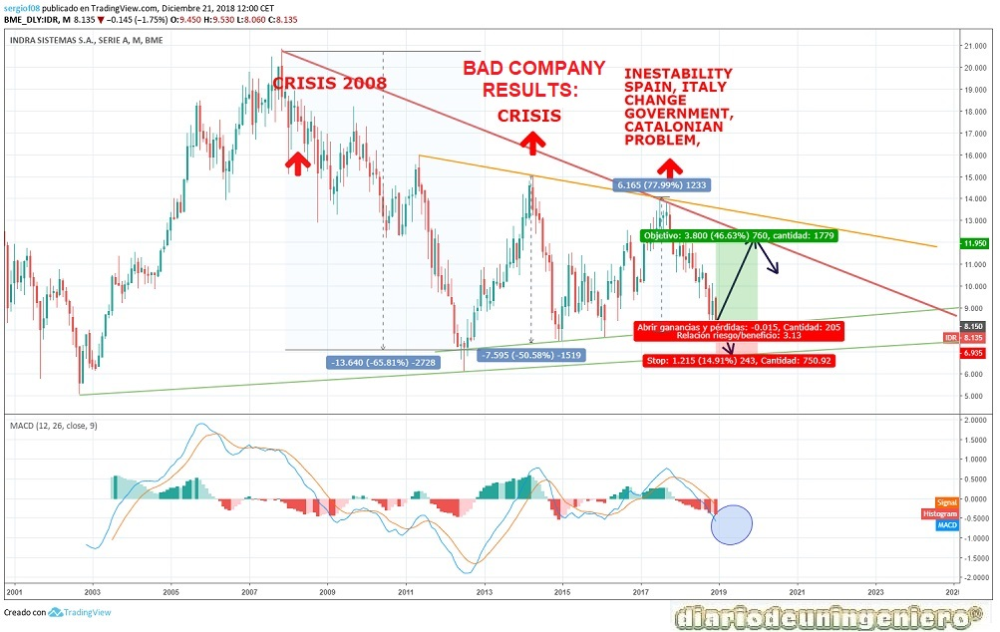

Indra Sistemas is a Spanish multinational company focused on consultancy, transport, energy and defense services, which is its main sector. It is the largest armament company in Spain, being one of the most important in Europe. Taking Spain as the main defense companies, AIRBUS MILITAR, Navantia, Urovesa and Tecnobit.
This company listed on the IBEX35 since 1999, is the merger between the company Ceselsa and the public group Inisel . This merger took place in 1992 and since then the structure of the company is as follows:
Indra has as main shareholders the State, through the SEPI, and the March family, a group that came to have a lot of power in Franco's time. Other groups that control it are US funds and Spanish banks.
From 2000 to 2010 the number of contracts in Indra did not stop ascending and the company made an incredible expansion to other countries. In this he had to see the rise of the Spanish economy and also the close contacts of this company with the government. Whether they are socialist governments or popular governments, Indra was always a toy of the state. The then president of Indra, Javier Monzón, had to do both with the rise of Indra to a first class company and with the resounding fall in which he was about to break . If it were not for what this company does, it is strategic and mandatory and would be from a bank or an entrepreneur.
In 2013, Indra, after starting to declare large losses and information that did not contrast in accounting terms, would carry out an investigation by different media. These investigations would see the inflated contracts that were held and the alleged bites of influential people in the company . Today this continues to happen but in a much more serious and professional and above all lighter since it has several external audits in some departments.
The aforementioned president after leaving office with the company with numerous unknowns regarding viability would receive about 20 million euros as settlement , when the company associated an ERE with the one I would play in the front line again because I said that 100 million euros would be earned in 3 years thanks to the dismissals of workers, who certainly did not do hardly any work. In other words, phantom workers in the Spain of that time with about 20% unemployment is hard to believe. This president, as I mentioned earlier, was in Indra for almost 25 years and that just before it became a key in the 80s when Telefónica arrived in South America, thanks to Luis Solana , brother of the former. - Secretary General of NATO and reference of socialism in the 90s. He would then move to Deloitte , before entering Indra. Curiously, this company would be the one that would audit for many years Indra, to taste of the president .
Later all these years of favors socialists and popular governments would be answered with numerous appointments as the son of Felipe Gonzalez or Josep Pujol Ferrusola, son of the former president of the Generalitat, the honorable molt of 3% . It would give money to finance the PP as well as many other companies in Spain .
In 2014 after several years of embezzlement and excess the president would be ceased , because and for this the state would exchange cards passing a part of the shares of the old Caja Madrid (BANKIA) to Telefónica . From there little to say, the new president would be the same as that of Telefónica and would create a strategic plan to start creating profit for the company and not continue to be a bottomless pit.
This change can be seen at the fundamental level, seeing how from 2015 the company would begin to reduce debt in an amazing way . The new president of Indra Fernando Martorell and his new team would carry out a splendid management , getting to leave the debt in only 380 million this year. The EBIDTA has been rising and the relationship with the debt is at levels of a healthy and strong company. The strategic plan was for 5 years with 2020 being the last year that ends.
That said, not only was the new president but the current situation of the Spanish economy that is much better than 8 years ago. It also has a lot to do with the reduction of salaries in the company and the recruitment policy of young trainees or engineers, who have made a huge sacrifice to take the company forward. In my view, having worked within this company and being a public medium as it controls to some extent the state and influential people in the country, I would expect good results to impact on the workers when the strategic plan ends.
Below I present the data of fundamentals that I find most important:
| ### | 2014 | 2015 | 2016 | 2017 | 2018 |
|---|---|---|---|---|---|
| Debt/ Cash company | Total Debt (M) | 7.005 | 5.113 | 5.260 | 7.360 | ## |
| Beneficio/valor acción | |||||
| Capitalization(M) | 1.324 | 1.422 | 1.708 | 2.014 | 1.522 |
| EBDITA (M) | 321 | 282 | 227 | 127 | 268* |
| PER | 8,96 | 11,09 | 16,52 | 25 | 12,96 |
| Net Benefit (M) | - | -641 | 70 | 127 | 114** |
| Dividendo | 27.6777 | ||||
| Debt/EBDITA | 2,06 | 3,2 | 13,8 | 4,37 | 1,44** |
If we focus on the long-term graph we see that there is an exponential rise since the 2001 crisis in the .com and the Iraq war that would bring the American indices to a minimum. It would continue with a growing rise that would take the titles of the company to revalue from 6 euros to more than 20 euros in just 5 years. Almost 400%, and is that at that time other goods had a similar rise as housing. However, it would not reach the Spanish stock market boom whose benchmark index, the IBEX35, would reach 15,000 points.
From 2007 to 2012, coinciding with the pricking of the real estate bubble the global banking crisis, and the company would suffer the return to reality. Descending to almost previous levels, 7 euros per share, 67% fall from maximum. This time however it would be in half the time of the climb, 3 and a half years. And is that falls have more acceleration than the ups as we all know. From here the IBEX and all European indices would make a rebound that has little to do with the situation of the company.
This rebound would respond to the over-punishment of the IBEX and would be more a speculative rebound unlike other rebounds of IBEX listed companies. As soon as news of all the scandals occurred in recent years in terms of loss of contracts and decrease of profit in certain projects, everything would be looked at with magnifying glass and the future of the company would be decided from the government of Mariano Rajoy.
From unpopular measures such as decreasing wages and collective dismissal, and avoid redundant people in the company would start to take off, although the price would suffer in 2015 due to the crisis of all Spanish securities by the collapse of oil prices at the end of 2015. From then on, it would recover past levels and hit the new temporary resistance, this time at 14 euros, which coincides with the maximum of the European indexes with the victory of Macron in May 2017.
From here it has been suffering a harassment and demolition is said for not as good results as expected. This is actually due to political changes and movement from within. This value does not reflect in many moments the reality of the company, since the bulk of the actions are held by groups related to the government. Right now it is subject to the reference index, the IBEX35, since it is a value with which it correlates perfectly except when there are internal problems such as the case of the last years of management carried out by the ex-president Monzon . Curiously, he has now found work in the PRISA group, a group closely linked to the socialist governments with which he had contact. And is that the stock market is closely linked to the economy that is directly influenced by politics unfortunately. And more in values such as the defense of the country as it is.

If we look at the short term, we will see how a key moment has been reached with the approach to the support level of 8 euros . The most normal thing would be that it would rise in the next 6 months and with strong desire to reach 11 euros, and then correct. In case you lost 7.7 euros you could go to minimums such as 6.7 euros. This would occur in the case of a debacle in the American indices that could affect the IBEX35. In order for these values to improve, the IBEX would have to be around 7,500 points, which is quite improbable but possible.
To finish, say that INDRA is not a value to invest but to close portfolios, so that the variation beta comes more related to the IBEX35 in case of falls in some particular value. In addition except for scares like the one of 2013, this value behaves quite stable. That if the growth with time will never be the same as a totally private company, and more in the technology sector, since the return to the shareholder is not the same and future growth usually serves to pay favors or direct new projects.

© 2016 - All Rights Reserved - Diseñada por Sergio López Martínez
El sitio se mantiene gracias a la publicidad, por favor Desactiva Adblock para seguir navegando
He desactivado Adblock![[Valid RSS]](https://www.onepointsync.com/wp-content/uploads/2016/08/valid-rss-rogers.png "Validate my RSS feed")